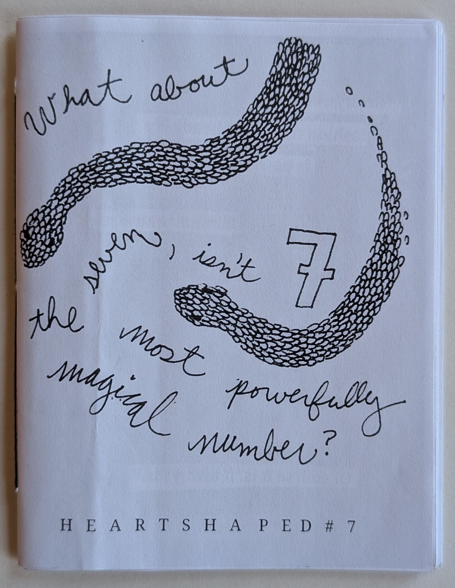

heartshaped zine
2004-present.
Copy paper (lavender, white, pink), staples; some editions include vellum, fabric, buttons, found paper, thread, twine.
Dimensions variable (see table below).

heartshaped is a zine I started writing in 2003, my senior year of high school. The first issue was published in April 2004. It was distro'ed through Mad People Distro. Later issues were sold or traded at zine fairs and on Etsy.
This work follows no particular publishing schedule or format. Different issues include short stories, poetry, personal musings, recipes, lists, and comics. The content is generally taken from my personal journals and tends to have a diaristic tone.
I made this video as part of my portfolio submission for the master's program I attended at SVA. (I later made a series of zines as part of my master's thesis.)
From the audio version I recorded to accompany heartshaped number nine, the 20th anniversary issue I produced in 2024:
This project has been so precious to me, and so personal, and once I had finished it, it felt so complete, in a way that my projects rarely do. It's so funny, because I'm such a believer in the importance of actually distributing zines; I'm such a believer in that something is not a zine if only one bespoke copy of it exists. To me, you need to go - you need to take it to the photocopier - you need to make some copies, you need to produce an edition, and you need to give it to people, or sell it to people, or whatever. And there's a funny irony in me feeling this sense of completion before I had done that. I'm really proud to have finished this project and I'm honored that you're witnessing it. So, thank you.
| every issue of heartshaped so far | |
| heartshaped #1 2004 4.25" x 5.5" (quarter sized) |
|
| heartshaped #2 2006 4.25" x 5.5" (quarter sized) |
|
| heartshaped #3 2006 4.25" x 5.5" (quarter sized) |
|
| heartshaped #4 2007 4.25" x 5.5" (quarter sized) |
|
| heartshaped #5 2013 4.25" x 5.5" (quarter sized) |
|
| heartshaped # 5 1/2 2014 2.75" x 4.25" (eighth sized) |
|
| heartshaped #6 2015 5.5" x 8.5" (half sized) |
|
|  | heartshaped #7 2019 4.25" x 5.5" (quarter sized) |
| heartshaped #8 2023 4.25" x 5.5" (quarter sized) |
|
| heartshaped #9 2024 5.5" x 8.5" (half sized) |
|
© 2025 Mary Reed